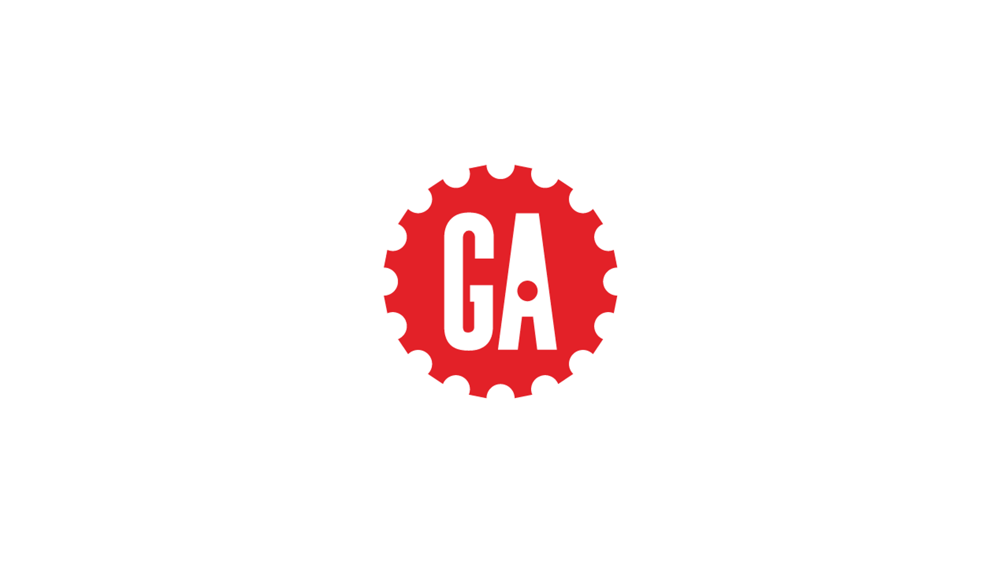
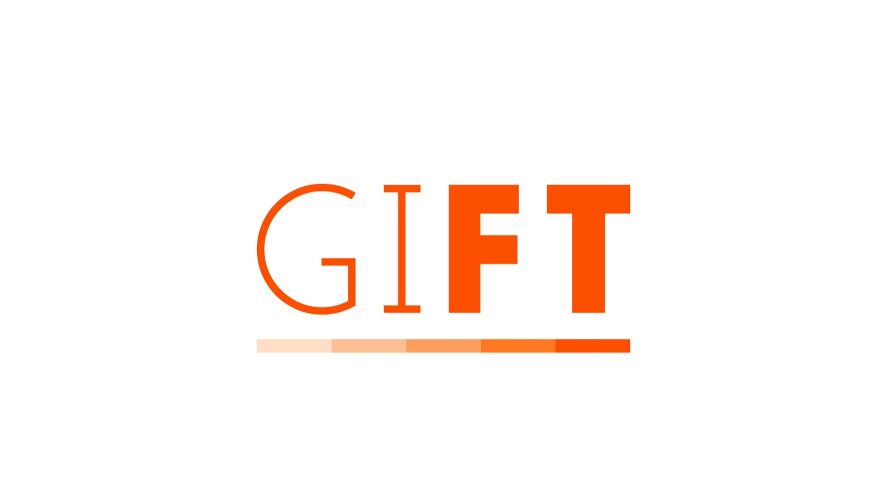
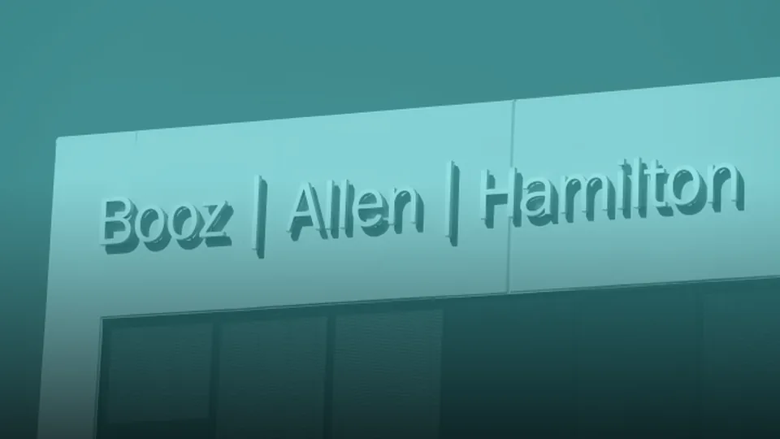
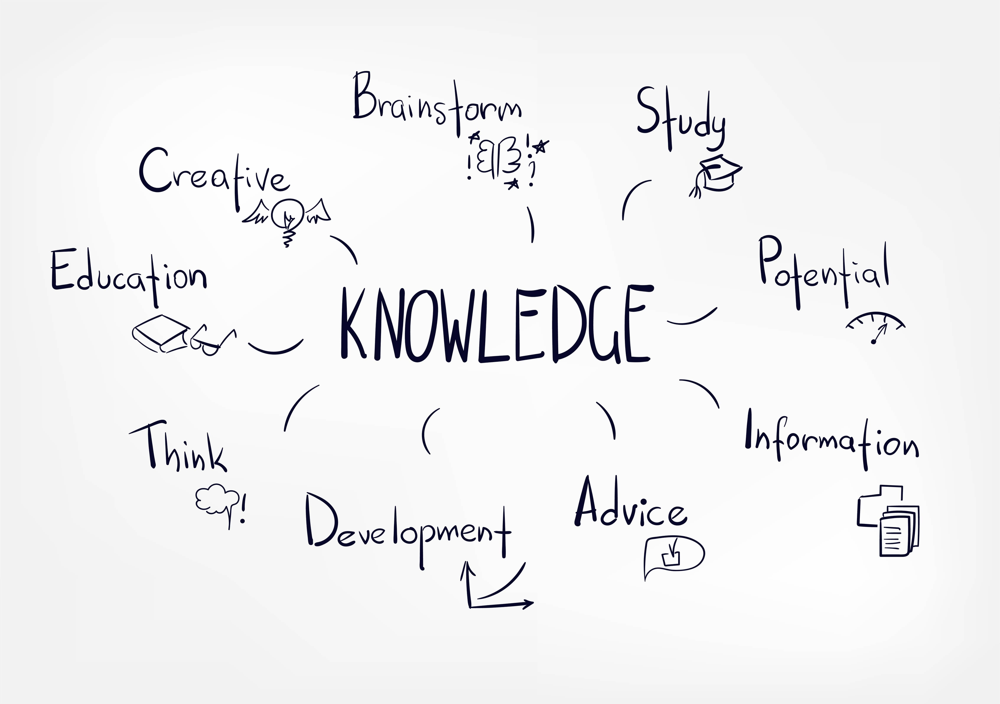
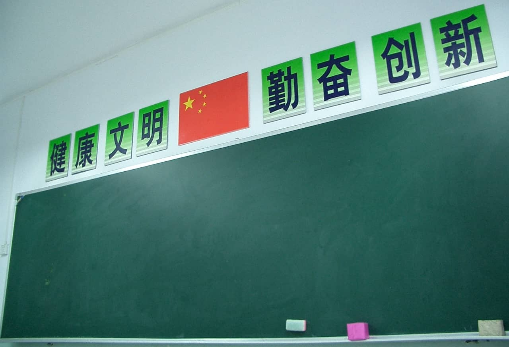

2026 – presentGeneral Assembly
Joined in a short-term contract role as a Lead Learning Experience Designer. Here I oversee the development of learning design projects and team members, developing training for technical audiences.
Hi 👋🏼, I'm Jason! I am a learning professional with deep experience standing up new learning programs, designing learning experiences, building effective systems, and driving organizational transformation. I completed my Ed.D. in Instructional Technology at Texas Tech University and my B.A. in Government at The University of Texas-Austin. I am currently a Lead Learning Experience Designer with General Assembly.
Since beginning my career in teaching, I have been deeply fascinated by the use of digital technology to enhance learning and improve outcomes. This has been significantly bolstered by the rise of artificial intelligence and my use of the technology in my work and creative projects (e.g., this website). I am curious about ways to use AI to accelerate learning, along with the phenomenon of cognitive offloading and trust in AI. Some of my other interests include organizational systems design and developing teams.
Previously, I worked as an Instructional Designer at the Massachusetts Institute of Technology and the International Monetary Fund, as a Curriculum Manager at Booz Allen Hamilton, as a Learning Consultant at the Global Initiative for Fiscal Transparency, and as a Director at The George Washington University. Across these, I have served in two inaugural roles, created new learning programs, built systems and products from scratch, and developed teams.
Aside from work, I enjoy spending time and trying new foods with my wife and kids, reading about historical topics, and brainstorming what I can do next with AI tools.
How I built my websiteFaculty development supporting the GW/Adobe creative initiative in science: Embedding the Adobe Creative Cloud in GW Physics courses, research and astronomy. We'll use the money to partially fund a physics lab and provide a stipend to faculty that collaborate with my team embedding Adobe Creative Cloud into science projects.
The work across my career has been purposefully diverse and driven by curiosity in how learning and communications are built across sectors. This has afforded me rich perspective on people and environments, a deep toolbox for solving problems, unique creative opportunities, and an ability to think with a hybrid academic and business mindset.
As much as I know, there is so much I don't. When work isn't taking all of my time, or when I find the right work/life balance, and/or when an idea is in my head, I pursue different ways to explore my curiosities. Below are some of those things I've continued learning, keep an eye on, and readings that have been very useful for me.

My journey so far as included ups and downs, endless hours of work and study, full nights in the office, unexpected events, lulls in the road that have helped me reset, any many other experiences. Going back to the start of my timeline as a student at The University of Texas-Austin, I would not have expected any of it. This is what makes life an adventure. 😀

2026 – presentJoined in a short-term contract role as a Lead Learning Experience Designer. Here I oversee the development of learning design projects and team members, developing training for technical audiences.
Signed-on as an occassional Substitute Teacher for Montgomery County, MD. Wanted to do a little teaching and see what it's like in K-12 today. It was also useful for my reset between roles.
Served in an inaugural role as Director of Strategic Digital Learning Initiatives leading digital fluency and AI literacy upskilling programs, including transformation of online learning development operations.
Artifacts
2020 – 2021Served as a short-term Learning Design Consultant for the design and development of a new Massive Open Online Course (MOOC) on fiscal policy and tax administration.
More info
2018 – 2020Joined as a Manager of Finance Learning & Development overseeing a multimodal firmwide finance curriculum, learning operations, and training for in-person and online environments.
Served as the inaugural Instructional Designer for the Institute for Capacity Development's Online Learning Program, creating 8 new Massive Open Online Courses (MOOCs) over my tenure.
ArtifactsServed as an Instructional Designer creating a new graduate-level engineering curriculum as part of establishing the Skolkovo Institute of Science and Technology in Moscow, Russia.
Artifacts
FEB 2013After 1 year of intense research and writing, I successfully defended my dissertation to graduate with my Education Doctorate in Instructional Technology. Proud that I graduated in 5 years!
DissertationWhile a doctoral student, I served as a Graduate Assistant and as a Graduate Part-Time Instructor helping to train pre- and in-service K-12 teachers on effective educational technology use.
Artifacts
2003 – 2007Served as a Foreign Teacher within K-9 during year 1, grades 10-12 during year 2, and as an instructor for undergraduate business students during years 3 and 4. Taught 1000's of students in this time.
ArtifactsI completed my Bachelor's degree with a major in Government with an emphasis on Comparative Politics, and a minor in Asian Studies with an emphasis on Chinese history.